Saint-Gobain Weber Yapı Kimyasalları & Harçlar
Büyük ebatlı granit karolar, porselen seramikler, suya dayanıklı flex derz dolguları, yapısal tamir harçları ve zemin tesviye şaplarında dünya lideri Saint-Gobain Weber çözümleri.
TS EN 12004
C2TE S1 Flex Konfor
TS EN 1504-3
R4 Yapısal Tamir
TS EN 13888
CG2 WA Esnek Derz
TS EN 14891
CM O2P Tam Elastik
Urla Ana Lojistik Deposu & Balçova Showroom’da Stoktan Teslim • Çeşme, Urla ve İzmir Şantiyelerine Paletli Aynı Gün Sevkiyat
weberkol flex konfor
........................................
Granit & Porselen / S1 Flex
60x120, 120x240 cm büyük ebat porselen seramik ve granit karolar için toz çıkarmayan, yüksek polimer katkılı S1 esnek yapıştırma harcı.
C2TE S1 Sınıfı
•
Toz Çıkarmaz
•
Dikeyde Sıfır Kayma
•
Yerden Isıtmaya Uygun
Teknik Detay
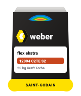
weberkol flex ekstra
........................................
Mega Levha & Dış Cephe / S2 Ultra Flex
120x280 cm mega porselen levhalar, dış cephe mekanik destekli kaplamalar ve yoğun titreşimli zeminler için ultra esnek S2 yapıştırıcı.
C2TE S2 Sınıfı
•
Ultra Yüksek Esneklik
•
Dış Cephe & Teras
•
Mega Plaka Uyumlu
Teknik Detay
weberkol flex pool
........................................
Yüzme Havuzu & Spa / Su Basıncı
Yüzme havuzları, termal kaplıcalar, su depoları ve ıslak hacimlerde klorlu su basıncına ve sıcaklık şoklarına dayanıklı havuz yapıştırıcısı.
Havuz & Su Deposu
•
Klor Dayanımlı
•
C2TE S1 Standart
•
Sürekli Islak Zemin
Teknik Detay
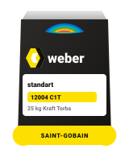
weberkol standart
........................................
İç Mekan Seramik & Fayans
İç mekan duvar ve zeminlerde küçük ve orta ebatlı seramik, karo ve fayans uygulamaları için kayma özelliği azaltılmış çimento harcı.
C1T Sınıfı
•
İç Duvar & Zemin
•
Küçük / Orta Ebat
•
Ekonomik & Güvenli
Teknik Detay
weberkol serakol konfor
........................................
Uzatılmış Çalışma / Tozsuz
Uzatılmış açık bekletme süresi (E) ve azaltılmış toz emisyonu ile iç mekanlarda ustaya geniş uygulama esnekliği sunan seramik harcı.
C1TE Sınıfı
•
Toz Çıkarmaz
•
30 dk Açık Bekletme
•
Kolay Taranır
Teknik Detay
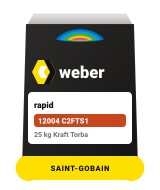
weberkol rapid
........................................
Hızlı Priz (3 Saatte Derz) / Acil Tadilat
3 saat içinde yaya trafiğine ve derz dolgusuna açılması gereken mağaza, restoran, otel ve acil ticari tadilat projeleri için hızlı sertleşen flex harç.
3 Saatte Kullanıma Açılış
•
C2FTS1 Hızlı Priz
•
Yüksek Mukavemet
•
Ticari Tadilat
Teknik Detay
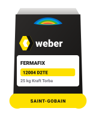
weberkol FERMAFIX
........................................
Kullanıma Hazır Pasta / Alçıpan & Boyalı Yüzey
Alçıpan, betopan, boyalı yüzey ve eski seramik üzerine su katılmadan doğrudan uygulanan kullanıma hazır macun kıvamında esnek yapıştırıcı.
D2TE Sınıfı
•
Kullanıma Hazır Kova
•
Alçıpan & Ahşap Yüzey
•
Su Katılmaz
Teknik Detay
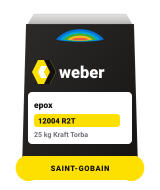
weberkol epox
........................................
Kimyasal Dirençli Epoksi Harç
Asit, yağ, alkali ve ağır kimyasallara maruz kalan gıda tesisleri, laboratuvarlar, endüstriyel mutfaklar ve oto yıkama alanları için epoksi yapıştırıcı.
R2T Reçine Esaslı
•
Ağır Kimyasal Dayanımı
•
2 Komponentli Set
•
Gıda Tesislerine Uygun
Teknik Detay
weberjoint flex
........................................
1-6 mm Esnek & Su İtici Derz
1-6 mm derz aralıkları için yüksek aşınma dirençli, düşük su emme oranına sahip, antibakteriyel küf dirençli renkli derz dolgusu.
CG2 WA Sınıfı
•
1-6 mm Aralık
•
Su İtici & Leke Tutmaz
•
Geniş Renk Kartelası
Teknik Detay
weberjoint SİL
........................................
Silikon Katkılı Su İtici Derz
Silikon katkısı ile su damlacıklarının yüzeyden akıp gitmesini sağlayan hidrofobik ıslak hacim derz dolgusu.
Silikon Katkılı
•
Hidrofobik Yüzey
•
Banyo & Duş
•
CG2 WA Standart
Teknik Detay
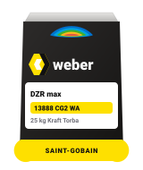
weberjoint DZR max
........................................
2-20 mm Geniş Derz & Rustik Taş
2-20 mm arasındaki geniş derzler, rustik taşlar, klinker tuğla ve dış mekan teras kaplamaları için çatlama yapmayan kalın derz dolgusu.
2-20 mm Kalın Derz
•
Çatlama Yapmaz
•
Rustik & Doğal Taş
•
Dış Mekan Dayanımlı
Teknik Detay
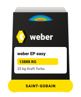
weber EP easy
........................................
Epoksi Derz Dolgu / Suyla Kolay Temizlenen
Su ile kolayca temizlenen, kimyasallara, lekelere ve asitlere tam dirençli, hijyenik 2 komponentli epoksi derz dolgu harcı.
RG Sınıfı Epoksi
•
Suyla Kolay Temizlik
•
Leke Tutmaz & Asit Dirençli
•
Havuz & Mutfak
Teknik Detay
weber PU 2A
........................................
Poliüretan Dilatasyon Mastiği
Yapı genleşme derzleri, parapet kenarları, doğrama çevreleri ve teras dilatasyonları için yüksek elastikiyete sahip poliüretan mastik.
%25 Hareket Kabiliyeti
•
Hava Şartlarına Dayanıklı
•
600 ml Sosis Ambalaj
•
Boyanabilir
Teknik Detay
weberdry SS-10
........................................
Tam Elastik 2K Çimento Yalıtım
Çimento ve akrilik emülsiyon esaslı, 2 komponentli tam elastik, UV dayanımlı, teras, balkon, havuz ve su depoları için sürme su yalıtım harcı.
CM O2P Tam Elastik
•
Teras, Havuz & Depo
•
İçme Suyuna Uygun
•
Çatlak Köprüleme
Teknik Detay
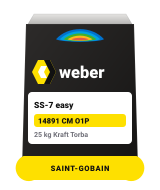
weberdry SS-7 easy
........................................
Yarı Elastik 2K Banyo & Islak Hacim
Banyo, duş, WC ve mutfak gibi iç mekan ıslak hacimler için seramik altı çift komponentli yarı elastik su yalıtım malzemesi.
CM O1P Yarı Elastik
•
Banyo & Duşakabin Altı
•
Seramik Dostu Yüzey
•
2K Set
Teknik Detay
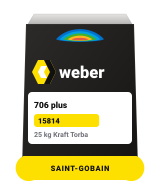
weberdry 706 plus
........................................
Bitüm-Kauçuk Temel & Perde Yalıtımı
Temel, perde duvar ve toprak altı beton yüzeyler için polimer modifiye bitüm kauçuk esaslı 2 komponentli kalın su yalıtım kaplaması.
Temel & Perde Duvar
•
Bitüm-Kauçuk 2K
•
Eksiz Membran
•
Yüksek Çatlak Köprüleme
Teknik Detay
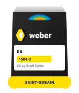
weberdry DS
........................................
Kristalize Su Yalıtımı / Negatif & Pozitif
Betonun kılcal gözeneklerine işleyerek kristaller üreten, negatif (içeriden) ve pozitif (dışarıdan) su basıncına dayanıklı kristalize harç.
Negatif & Pozitif Basınç
•
Kristalize Teknoloji
•
Asansör Çukuru & Bodrum
•
Betonla Bütünleşir
Teknik Detay
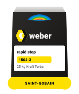
weberdry rapid stop
........................................
Şok Aktif Su Tıkacı / 1-2 Dakikada Priz
Basınçlı su sızıntılarını ve aktif su kaçaklarını 1-2 dakika içinde anında sertleşerek donduran şok su tıkama harcı.
1-2 Dakikada Donar
•
Aktif Su Kaçağını Keser
•
Şok Tıkaç
•
Kullanıma Hazır
Teknik Detay
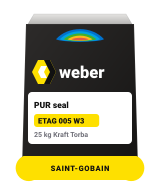
weberdry PUR seal
........................................
Saf Poliüretan Likit Membran / Açık Teras
Açık teraslar, çatılar ve metal yüzeyler için UV ışınlarına ve su göllenmesine dayanıklı tek komponentli saf poliüretan likit membran.
Saf Poliüretan
•
Göllenmeye Dayanıklı
•
UV Dirençli
•
Eksiz Kaplama
Teknik Detay
weberdry Pah Bandı
........................................
Elastik Köşe Pah Bandı (120 mm)
Islak hacim, teras ve havuzların zemin-duvar birleşim noktalarında su sızdırmazlık sürekliliği sağlayan elastik pah bandı.
120 mm Genişlik
•
Alkali Dayanımlı File
•
Köşe & Birleşim Eki
•
Elastik Gövde
Teknik Detay
weberep MA 200
........................................
Yapısal Kalın Tamir Harcı (10-40 mm)
Kolon, kiriş, perde ve tabliyelerin yapısal beton onarımları için polimer ve elyaf takviyeli, yüksek mukavemetli (50+ MPa) tiksotropik kalın tamir harcı.
R4 Yapısal Sınıf
•
50+ MPa Basınç Dayanımı
•
10-40 mm Tek Kat
•
Elyaf Takviyeli
Teknik Detay
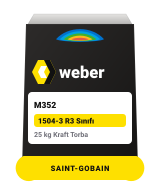
weberep M352
........................................
Elyaf Takviyeli İnce Tamir (2-10 mm)
Beton yüzeylerdeki gözenek, segregasyon ve ince çatlakların pürüzsüz düzeltilmesi için elyaf takviyeli ince tamir ve yüzey harcı.
R3 Sınıfı İnce Tamir
•
2-10 mm Uygulama
•
Pürüzsüz Yüzey
•
Boya Öncesi Kozmetik
Teknik Detay
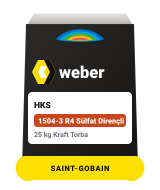
weberep HKS
........................................
Kıyı Şantiye & Sülfat Dayanımlı R4
Deniz kıyısındaki villalar, iskeleler, arıtma tesisleri ve tuzlu yeraltı sularına maruz kalan betonarme yapılar için sülfat ve klor dirençli tamir harcı.
Sülfat & Klor Direnci
•
Kıyı & Deniz Yapıları
•
R4 Sınıfı
•
Urla & Çeşme Şantiye
Teknik Detay
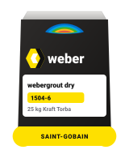
webergrout dry
........................................
Rötresiz Akıcı Grout & Ankraj (10-50 mm)
Çelik kolon pabuç altları, makine temelleri, vinç rayları ve filiz ekimi için genleşen, rötresiz kendiliğinden yerleşen akıcı harç.
EN 1504-6 Ankraj
•
Rötresiz Genleşir
•
Yüksek Akıcılık
•
60+ MPa Mukavemet
Teknik Detay
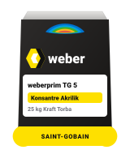
weberprim TG 5
........................................
Zemin & Sıva Aderans Astarı
Emici çimento yüzeylerin aderansını artıran, tozumayı kesen ve harcın erken su kaybını önleyen konsantre akrilik astar.
Konsantre Formül
•
Tozuma Önleyici
•
Aderans Köprüsü
•
Su Emiciliği Dengeler
Teknik Detay
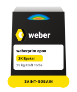
weberprim epox
........................................
Epoksi Nem Bariyeri & Aderans Astarı
Nemli beton zeminler, seramik üstü seramik yapıştırma ve epoksi kaplamalar öncesinde nem bariyeri oluşturan 2 komponentli epoksi astar.
Nem Bariyeri
•
Parlak Zemin Aderansı
•
2K Epoksi
•
Ultra Yapışma
Teknik Detay
weberfloor level
........................................
Kendiliğinden Yayılan Şap (2-10 mm)
Seramik, lamine parke, PVC ve halı öncesinde pürüzsüz ve teraziye gelmiş zemin oluşturan kendiliğinden yayılan çimento tesviye şapı.
CT-C25-F6 Sınıfı
•
2-10 mm Kalınlık
•
Self-Leveling Akıcı
•
Pürüzsüz Terazi
Teknik Detay
weberfloor flex
........................................
Esnek Yerden Isıtma Şapı (3-30 mm)
Yerden ısıtmalı zeminler, yoğun sirkülasyonlu mekanlar ve çatlama riski olan zeminler için elyaf katkılı yüksek esnek tesviye şapı.
Yerden Isıtma Uyumlu
•
3-30 mm Kalınlık
•
Elyaf Takviyeli
•
CT-C30-F7
Teknik Detay
weberfloor industri
........................................
Ağır Trafik Endüstriyel Zemin Şapı
Fabrika, atölye, depo, otopark ve forklift trafiğine maruz kalan endüstriyel alanlar için aşınmaya ultra dayanıklı kaplama şapı.
40+ MPa Ağır Hizmet
•
Forklift & Araç Trafiği
•
Ultra Aşınma Direnci
•
Hızlı Kürlenme
Teknik Detay
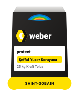
weberfloor protect
........................................
Tozuma Önleyici Şeffaf Zemin Cilası
Çimento esaslı zeminler ve tesviye şapları üzerinde tozuma önleyici, su ve yağ itici şeffaf koruyucu kaplama.
Tozumayı %100 Keser
•
Su & Yağ İtici
•
Şeffaf Mat Cila
•
Kolay Temizlenir
Teknik Detay